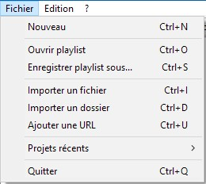
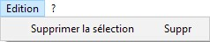

Mis à part le menu d'aide, RPG Deejay dispose d'un menu Fichier et d'un menu Edition.
Le menue Fichier ressemble à ceci :

Nouveau permet de créer une nouvelle playlist vide.
Ouvrir playlist vous offre la possibilité de charger une playlist sauvegardée précédamment.
Enregistrer playlist sous... vous permet de sauvegarder une playlist que vous venez de faire.
Importer un fichier vous permettra d'importer un fichier audio. (ogg, flac, wav, ou même mp3 non protégé sous windows)
Importer un dossier ajoute tous les fichiers audio contenus dans un dossier à votre projet. Vous pouvez aussi
ajouter un dossier contenant plusieurs dossiers, chacun d'eux devant contenir des fichiers audio.
Ajouter une URL permet d'ajouter l'URL d'une ou plusieurs musiques, comme par exemple l'URL Youtube d'un album musical.
Projets récents vous aidera à retrouver les dernières playlist sauvegardées, afin de les recharger.
Quitter fermera ce programme.
Le menue Edition ressemble à ceci :

Supprimer la sélection vous permettra de supprimer une piste audio sélectionnée dans votre playlist, à droite de l'écran.
Retour à l'index...